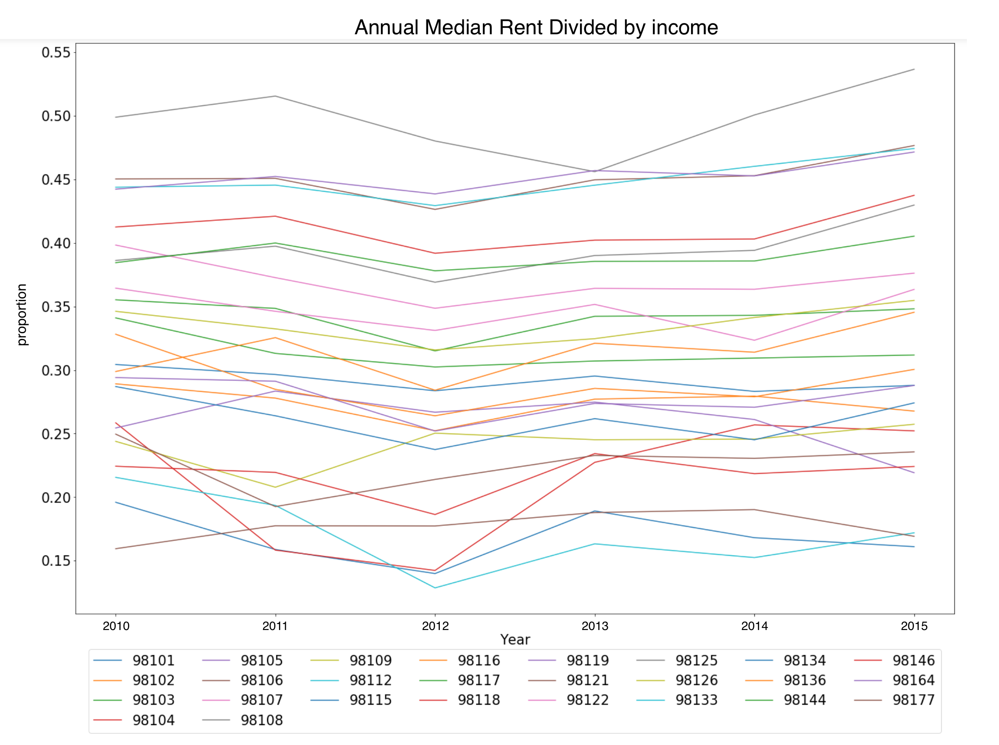

Yakima Ave S Property Estimates

Adress: 1310 Yakima Ave S
Land Sqft: 16,476sqft
Permit Type: Lowrise 1
Estimated Buildable Sqft: 37071sqft
Estimated units: 18
Estimated cost: $6,302,070
A study of affordability and the effect of HALA Proposal L. 1 in Seattle.
Home prices have risen in Seattle faster than anywhere else in the nation, for a whole year straight. With other similar headlines coming up, Seattle has been taking steps to ensure affordable housing for all its inhabitants.
In 2014, former Seattle mayor, Ed Murray, put together a committee to study and come up with solutions to the housing affordability problem in Seattle. The committee created a set 65 recommendations, some of which have already been enacted.
For our project, we plan to focus on Proposal L. 1 of HALA and whether this proposal should be enacted, and if so, to what extent?
The full text of the proposal is below.
For City owned property, the City should mandate that surplus and underutilized properties that are suitable for housing development be prioritized for affordable housing. It should explicitly allow the sale or lease of City-owned land at less than fair market value for affordable housing purposes, recognizing that this comes at a cost to other city needs and general funds.
When land is not suitable for housing development, the unrestricted proceeds from sale should be dedicated to affordable housing development. The City should also create a mandate for the codevelopment of affordable housing in conjunction with new public buildings and investments such as community centers, libraries, public schools, and other institutions of learning.
To summarize, the proposal wants to build housing on underutilized land, that the City already owns. If the land isn't suitable for homes, then the proceedings from the sale go directly towards affordable housing.
Given the proposal, it's natural to ask about the land the City owns. How much of this is suitable for new homes? How many people could we house on this land? At what cost? But, before we try to find out whether this is a good solution, we need to understand what is a good solution. HALA's goals included creating 20,000 affordable housing units and 30,000 housing units at market price. Because we want to focus specifically on the affordable housing part, we begin our study by finding out how many people are burdened by the rent they pay. We then move on to the viability of the proposal. Let's go down the rabbit hole!
We can see that the average seattle rent has risen by $1,200 over the last four years.
We can see that the percentage of income going towards rent is beginning to rise again.
We decided to look at the proportion of income spent on rent in Seattle for a source of what economic pressures people might be facing. We used IRS tax-bracket data to establish income for people in the city of Seattle. We retrieved data about rent people paid using the Zillow API. If you look at the model you will see the varying economic situation for given earners per zipcode, overlayed with the rent they pay. The entry boxes let you see how different spending levels on rent produce different outcomes in terms of annual extra in come.
Extra income.
Being able to afford housing doesn't just mean people have enough money out of their total. Money spent on rent needs to be a reasonable amount that doesn't limit people in other aspects of life. They need to be able to save and spend on other things. This is a rough metric of the quality of life. ...
The goal of this analysis was to determine how much affordable hosuing could be built on excess/surplus/underutilized land the city owns and at what cost. Affordable housing was quantified by determining units buildable which can hold one or more people, at what cost in dollars. Cost was assessed from an international survey of builders. This amount was $150/sqft for townhouses, $170/sqft for low-rise, and $145/sqft for affordable units
To evaluate the possible costs/benefits of building on excess city land we started with the city property inventory dataset. It contains information about all the land the city owns including a plot's address, classification (such as Excess, Fully utilized, Surplus, or Under utilized), land square footage, and department whose juridsiction it is.
Zoning permit data was added to the dataset by using a zoning lookup tool on the Seattle website.
Our model takes in two inputs: the square footage of the land and its zoning permit. These two values are the bare minimum for estimating the amount of units that could be built because while square footage tells how much land there is, zoning determines things like the amount of land that can actually be built on, the minimum size for a dwelling, and the maximum height that can be built. Summaries for various zoning types were obtained from the city of Seattle Department of Construction & Inspections zoning page.
An example of how the regulations were coded into our model is Lowrise 1 (LR1) zones. At a high level LR1 zoning requirements are:
And so if a given plot of land is zoned as LR1, our model truncates 1/4 of the square footage because it must be provided as amenity space, while also multiplying the land to account for the height maximum. The total buildable square footage is then divded by the minimum dwelling size for that zone. This is the same process as all other zonings, with buildable square footage and minimum dwelling size changing depending on the zoning.
The following are a few estimation of specific plots the city has already considered building on.
Here we have a map with all the unutilized land we considered for the study. Click on a marker to view details about the plot. You can even zoom in and use the street view (person icon at bottom right) button to look at the actual property.
Adress: 1310 Yakima Ave S
Land Sqft: 16,476sqft
Permit Type: Lowrise 1
Estimated Buildable Sqft: 37071sqft
Estimated units: 18
Estimated cost: $6,302,070
Adress: 2765 Harbor Ave SW/p>
Land Sqft: 20,112sqft
Estimated Buildable Sqft: 7039sqft (Single-family zoning restricts buildable area to 35% of total land sqft)
Estimated units: 3
Estimated cost: $1,055,880
These are the numbers we got.
The above is our estimates for if Seattle was to develop all excess land it owns, keeping it zoned as it is, at a fixed cost/sqft to build. While the city is unlikely to zone all their property, our tool can be used to inform which zones are more beneficial than others given their zoning and size. It is possible that this tool could be used to understand how changing zoning permits for city land could build more or less land. In the following section we discuss the limitations of our method.
While we considered zoning permit and square footage for a given plot of land, there are a great many other factors we did not factor in that effect the accuracy of our estimates.
Environmental: We are not currently factoring in details related to the physical condition of the land. This includes things related to the slope of the land, soil-sturdiness, or the preservation status. There are both legal and physical constraints to building on slopes and wetlands, that increase the cost and lower the units that can be built on a given plot of land. Some plots the city own may not be able to be built on at all because the landscaping would be too costly/infeasible. Seattle also has different environmental minimum bars that must be passed for building projects that would affect the size of development.
Variablility in Building Costs: Our model assumes a fixed cost per sqft of building. In reality there are many factors in the total cost of building a housing unit. Some things that could be added to improve the accuracy would be to account for removing trees/rocks from a given plot, cost of designing the structure, cost of inspectors and contractors for various building operations. It is also the case that building in Capitol Hill is more expensive than building in Northgate, because of the relative cramptness and impact on the traffic and community of the area
Regulatory/Legal Concerns: There are restrictions on building certain sizes of dwellings within a certain proximity of single-family zoned areas that were not taken in to account. Similarly, the regulations for a given plot of land are varied dependent on the project being undertaken, which may allow for more or less of the total area to be used for housing.